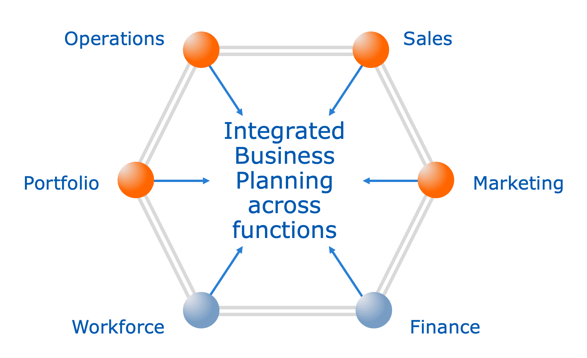

Contact Us
Have any questions? Reach out to us through the following ways.

Sustainable Integrated Business Planning (SIBP) isn’t just our specialty—it’s our philosophy. Our broad, integrated view of sustainability focuses on achieving long-term success while maintaining the stability and vitality of the wider business ecosystem. Sustainability goes beyond environmental and social responsibilities—it is a strategic business approach to improve business operations today without compromising the ability to adapt and thrive in the future. It is about meeting present business needs while safeguarding resources and opportunities for future growth. Striking this balance is at the heart of building a truly sustainable business.
Hover over each bullet to see details |
 |
| At its core, SIBP is a strategic and execution-focused framework that balances governance—structure, accountability, and control—with agility, adaptability, and continuous optimisation. Effective IBP ensures that governance doesn’t become a bottleneck but instead enables strategic execution in a dynamic business environment | |
SIBP fosters a unified, agile decision-making capability by providing a single, cohesive view across all business functions. This integration ensures that all stakeholders—from finance to operations, sales, and sustainability—are aligned and can make informed, data-driven decisions. By streamlining and formalising decision-making processes, SIBP strengthens governance while enabling swift, efficient execution in a rapidly changing business environment.
SIBP strengthens governance by establishing clear structures, accountability, and decision-making mechanisms to manage the execution of strategy. With structured processes for aligning financial, operational, and strategic plans, SIBP provides the framework for cohesive leadership and decision-making:
SIBP also enhances decision-making by introducing flexibility, adaptability, and real-time optimisation. Through advanced analytics and AI-driven insights, businesses can respond quickly to market changes while maintaining alignment with strategic objectives:
SIBP helps organisations balance short-term objectives and long-term strategic aspirations. While it’s essential to achieve immediate financial targets, working through this framework ensures that those actions also contribute to long-term growth, resilience, and profitability. For example, the relationship between financial performance and sustainability goals highlights the value of profitability, reputation, and savings. By aligning operational and sustainability decisions, businesses can capitalise on opportunities that enhance both bottom-line results and long-term viability. This balance ensures organisations are not just reactive to market pressures but are proactively building future-ready capabilities.
What makes SIBP truly transformative is that Environmental, Social, and Governance (ESG) criteria are directly embedded into strategy and business planning. Rather than treating sustainability as an isolated objective, SIBP ensures that it is considered alongside financial, operational, and strategic priorities, providing a structured, traceable approach to decision-making.
This integration does not mean blindly prioritising sustainability at the expense of other business objectives. Instead, SIBP enables organisations to evaluate trade-offs transparently, ensuring that decisions—whether for or against a particular sustainability initiative—are well-documented and justified in both the short and long term.
By aligning sustainability with business realities, organisations can clearly trace the rationale behind key decisions, whether driven by consumer demand, operational efficiencies, cost structures, or regulatory compliance. This traceability not only improves accountability but also helps businesses remain agile and adaptable in a rapidly evolving world.
With Sustainable Integrated Business Planning, organisations can pivot effectively in changing conditions—whether accelerating sustainability-driven initiatives (such as optimising supply chains for lower carbon emissions) or making pragmatic trade-offs when immediate financial, operational, or supply chain constraints require an alternative approach.
SIBP builds on the foundational principles of Sales & Operations Planning and contemporary IBP by extending scope and enhancing capabilities across various dimensions:
SIBP is a cross-organisational process designed to simplify and streamline business operations, resulting in a single, agreed-upon plan that drives continuous improvement across the organization. Here’s how our methodology unfolds:
This process is cyclical and iterative, occurring monthly, with each cycle feeding into the next, facilitating continuous improvement and starting with the product/innovation review. Sustainability, including criteria and trade-off analysis, is embedded in every stage, ensuring that decisions support not only financial and operational objectives but also sustainable and responsible practices.
Our engagement pathway is designed to guide our clients through a seamless journey, from initial consultation to strategic execution. By fostering collaboration and alignment at every stage, we ensure that our clients are empowered to achieve their long-term goals. Here's how we work together:
Our approach is collaborative and iterative, ensuring that we continuously align with your business objectives. Through a series of structured reviews, tailored workshops, and expert consultations, we guide you through each phase of the pathway, ensuring your strategy is executed efficiently and effectively.
We provide the necessary tools, frameworks, and insights that ensure your organisation can make informed decisions, stay adaptable, and build sustainable success. Whether it's through integrated business planning, change management, or innovation support, we are committed to your success every step of the way.
This is a quick self asssessment - please get in touch for a more detailed diagnostic
Download NowHave any questions? Reach out to us through the following ways.